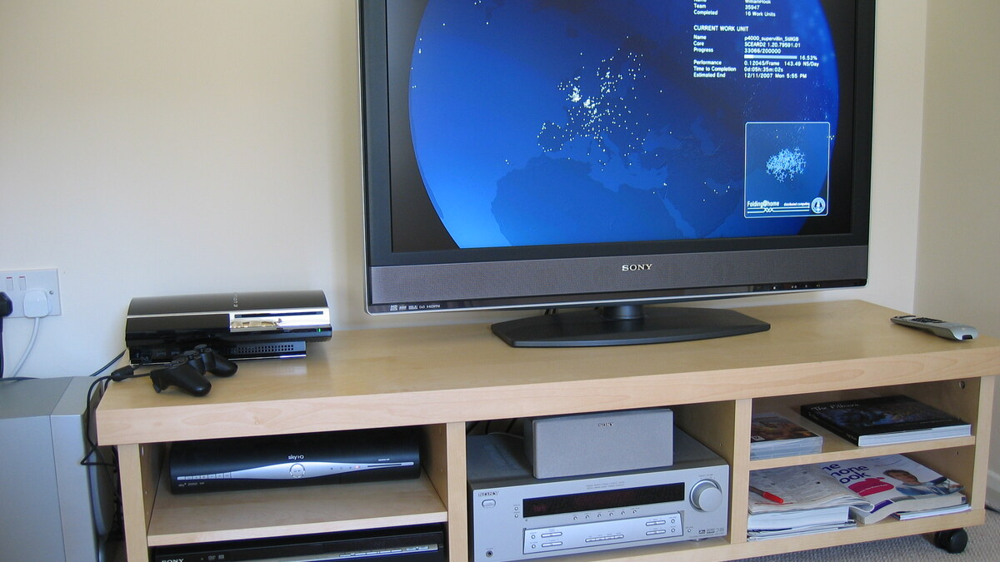

Confirmação oficial e comoção internacional
O ator e produtor norte-americano Roy Frank "RJ" Mitte III, que conquistou plateias do mundo inteiro com sua marcante participação na série dramática Breaking Bad, faleceu aos 34 anos na cidade de Brownsville, no estado do Texas. A notícia foi confirmada oficialmente por seus representantes de imprensa e amplamente repercutida por veículos como The Guardian, Los Angeles Times, CBS News e Variety.
De acordo com informações fornecidas por fontes ligadas às autoridades do condado e ratificadas por porta-vozes do artista, a causa da morte foi registrada como suicídio. Em comunicado oficial direcionado aos fãs e à imprensa, a equipe do artista expressou profunda consternação e pediu respeito e recolhimento à família:
"RJ era um espírito generoso e iluminado, cuja dedicação, coragem e generosidade tocaram milhões de vidas em todos os cantos do planeta. Ele superou barreiras monumentais e inspirou uma geração inteira a sonhar sem limitações. Estamos inconsoláveis e pedimos carinho e privacidade para sua família neste momento de luto irreparável."
O papel em 'Breaking Bad' e o tributo de Bryan Cranston
RJ Mitte iniciou sua carreira artística ainda na infância, após se mudar com a família para Los Angeles. Sua grande consagração veio ao ser escalado aos 14 anos para viver Walter White Jr. (Flynn), o filho do professor de química Walter White, protagonizado por Bryan Cranston, ao longo das cinco premiadas temporadas de Breaking Bad (2008–2013).
Seu personagem era o coração moral da narrativa, retratando com genuína sensibilidade os desafios da adolescência e o afeto incondicional pela família em meio à turbulência dos acontecimentos da trama. Ao tomar conhecimento do ocorrido, Bryan Cranston utilizou suas redes sociais para manifestar imenso pesar:
"Estou devastado e em profundo pesar pela partida do meu doce filho da ficção, RJ Mitte. Ele era um jovem extraordinário, vibrante, talentoso e com um coração enorme. Trocamos mensagens há poucas semanas para combinar um almoço. A perda de sua luz tão cedo é uma tragédia sem palavras. Ele sempre viverá com muito amor na minha memória."
Aaron Paul, parceiro de cena e intérprete de Jesse Pinkman, declarou-se de coração partido, lembrando o amigo como "uma alma leal, doce e apaixonada pela vida". Dean Norris, que interpretou o agente Hank Schrader, destacou a energia contagiante e a coragem que RJ sempre demonstrava em todos os dias de filmagem.
Ativismo incansável e representatividade na TV
Diagnosticado aos três anos de idade com paralisia cerebral leve, RJ Mitte transformou sua própria trajetória pessoal em uma das mais emblemáticas causas da indústria cinematográfica contemporânea. Ao contrário de uma prática recorrente em Hollywood — onde atores sem deficiência costumavam ser contratados para papéis de personagens com necessidades especiais —, a presença de Mitte na televisão em horário nobre estabeleceu um marco histórico de autenticidade e representatividade.
Mitte atuou como embaixador oficial da United Cerebral Palsy (UCP) e da rede hospitalar filantrópica Shriners Children's. Também foi porta-voz ativo de comitês de diversidade e inclusão do sindicato dos atores norte-americanos (SAG-AFTRA), lutando ativamente pela ampliação de oportunidades profissionais para artistas e técnicos com deficiência.
Em palestras em escolas e grandes convenções como a Rose City Comic Con, Mitte sempre enfatizava que a condição física não deveria ser vista como barreira incapacitante: "A deficiência não é algo que nos define ou nos diminui; ela é uma característica humana com a qual aprendemos a criar resiliência e propósito", repetia com frequência em seus encontros com o público.
Trabalhos no cinema e projetos recentes
Além do sucesso em Breaking Bad, RJ Mitte integrou o elenco recorrente do drama teen Switched at Birth (onde viveu Campbell Bingman) e atuou como protagonista nos longas-metragens dramáticos Triumph (2021) e no thriller psicológico The Oak Room (2020). Recentemente, no final de setembro de 2026, ele havia comparecido à exibição especial do longa independente Talking to Strangers e mantinha projetos futuros em pré-produção, incluindo o filme Forgotten Outlaw.
O legado de RJ Mitte permanece eternizado como o de um artista que quebrou paradigmas e abriu portas definitivas para a inclusão na cultura pop mundial.
- Brasil: O Centro de Valorização da Vida (CVV) oferece suporte emocional gratuito e confidencial 24 horas por dia pelo telefone 188 ou pelo chat online no site cvv.org.br.
- Estados Unidos: Ligue ou envie uma mensagem de texto para o número 988 (Suicide & Crisis Lifeline), disponível 24 horas por dia, 7 dias por semana.
- Portugal: A Linha SOS Voz Amiga atende gratuitamente pelo telefone 21 354 45 45 ou pelo 91 280 26 69.
🔗 Fontes e Referências Oficiais Consultadas
- The Guardian — RJ Mitte, actor who played Walter White Jr in Breaking Bad, dies aged 34 ↗
- Los Angeles Times — Breaking Bad actor and disability advocate RJ Mitte passes away at 34 ↗
- CBS News — Breaking Bad star RJ Mitte dies at 34; co-stars Bryan Cranston and Aaron Paul pay tribute ↗
- Variety — RJ Mitte Dead: Breaking Bad Star and Inclusion Advocate Was 34 ↗
🧭 Outras Notícias Recentes
Acompanhe outros acontecimentos e novidades verificadas no portal.
Filme live-action de Cyberpunk 2077 entra em desenvolvimento inicial com a Paramount
Adaptação cinematográfica do universo de Night City é desenvolvida em parceria com a CD Projekt RED e o produtor Lorenzo di Bonaventura.
Ler notícia
ENTRETENIMENTOGuia da semana reúne documentário sobre Norm Macdonald, Tenzing e estreias do streaming
Semana traz documentário de Judd Apatow na Netflix, a biografia épica Tenzing no Apple TV, produções da Marvel e novos lançamentos musicais.
Ler notícia CIÊNCIA
CIÊNCIA
Detector no gelo da Antártida revela partículas cósmicas e rende Nobel de Física a Francis Halzen
O observatório IceCube, com sensores sob a calota do Polo Sul, captura neutrinos de alta energia de regiões extremas do Universo.
Ler notícia